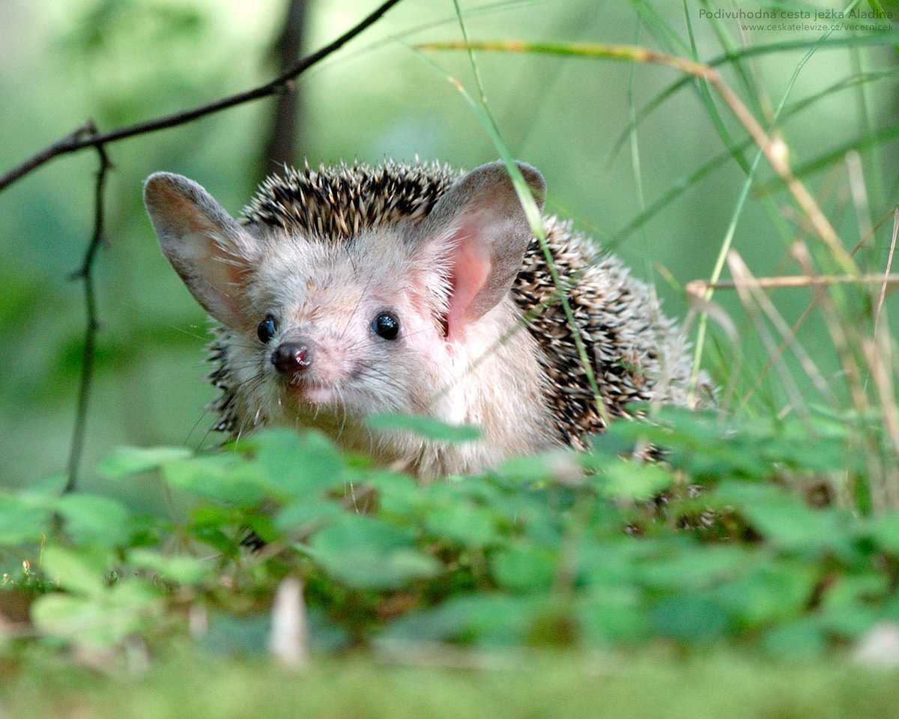

їжак вухатий

До незвичних тварин, занесених до Червоної книги, відноситься їжак вухатий.
Він поширений на території
Європи, в тому числі й України та живе переважно в степах і пустелях.
Унікальним серед інших їжаків,
роблять
його довгі вуха, які можуть за розміром бути як половина голови.
вихухіль
Наступний, кого ми не могли оминути увагою — вихухіль або хохуля.
Крім екстравагантної назви цю тваринку
також виділяє те, що вона належить до однієї з найдавніших груп ссавців,
її родичі жили понад 30 млн.
років тому. З цієї причини хохулю по праву називають сучасником мамонтів.
Як не дивно, ця доволі незвична тваринка є родичем крота.
Оскільки хохуля переважну більшість свого
життя проводить під водою, вушних раковин в неї немає, а слухові отвори закриті шкірою.
Хохуля —
найстаріший
ссавець в Україні з ряду комахоїдних.
рись
Одна з найбільш красивих диких тварин України — рись.
Мало хто може скласти їй конкуренцію у грації під час полювання. Досі достеменно не вивчено для чого у рисі своєрідні пензлики на вухах, проте зафіксовано що без них її слух суттєво знижується.
Рись завжди була окутана пеленою таємничості та стародавні народи присвоювали їй міфічні сили. Греки до прикладу вірили у вміння рисі бачити предмети наскрізь, а янтар вони вважали її скам’янілою сечею.
беркут
Титул царя птахів носить найбільший з орлів — беркут.

Розмах крил беркута сягає два з половиною метри, а вага до шести кілограм.
Окрім величезних розмірів
його також виділяє хист до будування,
шириною його гнізда понад два метри, а висотою сягають
трьох з
половиною
метрів і можуть витримати масу людини.
зубр
Ще однією благородною твариною, яка під захистом Червоної книги є зубр — наймогутніший парнокопитний в Україні.
Вистою понад два метри та вагою в тону цей звір є близьким родичем бізона американського.
Зубри
унікальні у
своїй самостійності.
Маса телят при появі на світ до 25 кілограмів, проте вже через півтори години після
народження теля вже вільно пересувається і може слідувати за мамою та стадом.
Через три тижні після
народження зубри вже можуть харчуватись травою.
бурий ведмідь
Ще однією благородною твариною, яка під захистом Червоної книги є зубр — наймогутніший парнокопитний в Україні.

Не зважаючи на великі розміри ведмідь може розвивати швидкість до 40 миль/год., що практично в тричі швидше середньо статистичної людини.
В зимовій сплячці пульс ведмедів може сповільнюватись до восьми ударів на хвилину.
Дивовижним фактом про бурих ведмедів є також те, що найточніший спосіб визначення їх віку є підрахунок кілець на зрізі корінного зуба.
Всесвітній день захисту тварин відзначають кожного року 4 жовтня.
Диким тваринам потрібна наша допомога, інакше
прийде день,
коли ми будемо їх бачити лише на картинках чи в неволі!